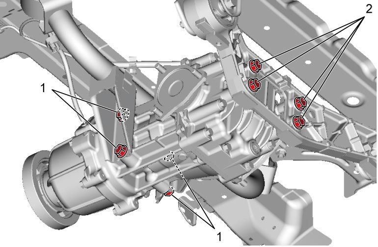
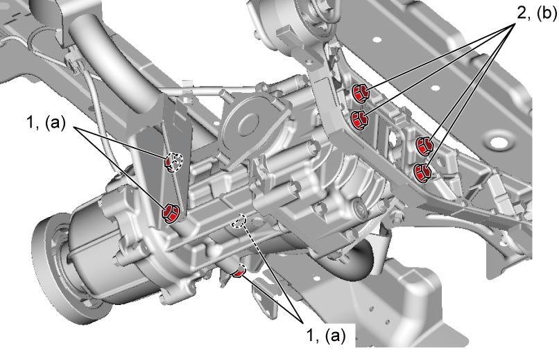

3B
| Rear Differential Dismounting and Remounting |
Dismounting
1)Hoist vehicle and drain rear differential oil. 
2)Remove propeller shaft.
3)Detach right and left rear drive shafts from rear drive shaft flanges referring to Step 3) – 4) of Rear Drive Shaft Assembly Removal and Installation:Rear.
4)Disconnect rear drive coupling assembly connector, rear drive coupling air temperature sensor connector and breather hose.
5)Support rear differential using transmission jack.
6)Remove rear differential mounting arm bolts (1) and rear differential mounting rear bracket bolts (2), and then remove rear differential.


 "Expand image")
Remounting
Reverse dismounting procedure noting the following point.
•Tighten rear differential mounting arm bolts (1) and rear differential mounting rear bracket bolts (2) to specified torque.
Rear differential mounting rear bracket bolt (b): 80 N·m (8.2 kgf-m, 59.0 lbf-ft)
Tightening torque
Rear differential mounting arm bolt (a): 80 N·m (8.2 kgf-m, 59.0 lbf-ft)Rear differential mounting rear bracket bolt (b): 80 N·m (8.2 kgf-m, 59.0 lbf-ft)

 "Expand image")